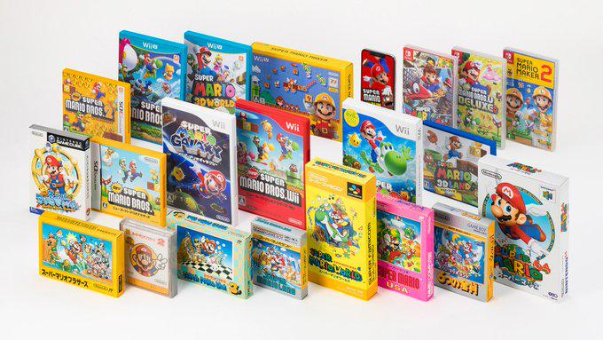
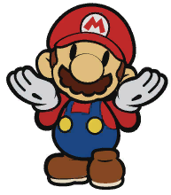
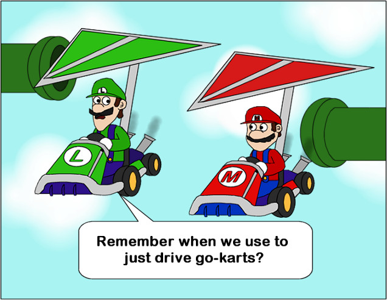
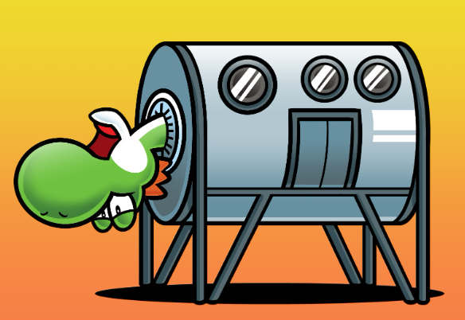

Enjoy a second collection of Mario Oddity articles, even more flamebaity than the other one! Updated regularly! Enjoy.
Super Mario Land: It’s a 1989 launch game for the Gameboy! I like the unique themeing, concept and some of the ideas here. Yes the game overall is mediocre in context of the entire series, but rather interesting and important historically. We must remember how early of a platform game this is for Mario. There was SMB 1 and…. SMB 2! That’s it at least if you were American. So there isn’t a whole lot of precedent set, compounded by this being a launch title for the system. With that in mind I respect it for what it tries to do, bring Mario platforming to your handheld. Of course the limitations show in some elements like the visuals and game play mechanics. For instance there are bombshell koopas instead of koopa troopas because they didn’t want to program shell bouncing. The other enemies also have odd untranslated names which would never fly now. But again, we can forgive some of this for the time. The music is legitimately good. We also introduce Daisy who is infamous for several reasons. Despite it being a main series game, Daisy is regulated to spin offs, entirely unlike characters like Bowser Junior or Rosalina. Having an original villain is neat from our modern perspective where some character choices are cliche, but at the time it wouldn’t be too weird to introduce new characters for new Mario games. I think it’s worth a play through to experience a different environment and some of the unexpected gameplay changes they throw at you. It’s a short journey, in fact that was a complaint back in the day- but leaves you no excuse to not check it out now!

RANT AHEAD TOO LATE TO TURN BACK
That computer is a lie, as I hope you find this to be a nuanced take based on my growing up with Mario and Nintendo since the early 00s. Let's discuss insidious declines, rollercoasters of quality, our tolerance for it, and a few redemption stories too.
The TL;DR:'The Super Mario Galaxy 2 effect is when a newer entry or a direct sequel is polished and updated, yet inferior in regards to amount of content, depth, mechanics, story, and/or world building.
How do I spot this?: To preface, the Nintendo Wii was the last ‘uncharted’ era for Mario. His games were great and his spin-off cast too (assuming they got a game), but there were signs of future times creeping in. We had waggle style controls from the very start, as did everything on the Wii, and an aim to be more casual. We progress and evolve with some franchises, but others go dark. We didn't get a golf or original Mario tennis game. We went from four Mario Parties on Gamecube to two on the Wii. The first one is iffy with people down till this day and the second was Mario Party 9, a prime suspect of the effect. Nintendo 3DS jumped into the fray with some meh spin-off titles, and then there's the entire Nintendo WiiU era. At that point to call out content starved continuations and the general feeling of not caring wouldn't get you labeled a hater, because everyone knew it. Once in this pit, it isn't easy for developers to get out. Drastic measures have to be taken to return to form and a contributing factor of this effect is being 'lazy' or a 'money grub' or 'too safe.'

A few scrappy mechanics aside, it's an alright mission pack.
But why is it the Super Mario Galaxy 2 effect? Not because I hate it, or it's lazy or a money grub or too safe, but it is a proto example from 2010. It was always on-disc DLC for the 2007 masterpiece, the developers as much as admitting such, and so we strip away the Observatory hub, backstory, and whatever else in exchange for the Starship Mario and a New Super Mario Bros level map, plus other quality of life improvements. These work fine in this context and it IS new quality content, but future offenders will take the stripped down concept and give a sterile or shallow experience at best. At worse they may just remake it and call it a day!
Might there be cracks in the pillars?
Main series: 2D Mario games have been accused of genericness since 2009's New Super Mario Bros Wii, which was only the first sequel and no not an example of the Galaxy 2 effect, expanding on the 2006 DS game masterfully. New Super Mario Bros 2 is the weakest entry by consensus, and from 2012. You will see that year again. It was more of the same, and solid mechanically, but just a bit lamer and only offered collecting money to hold your attention. New Super Mario Bros U is pretty and slightly better, yet remains formulaic. I can forgive the Year of Luigi rehash, but note that it was ported in 2019 to the Switch as New Super Mario Bros Wii U Deluxe. Wait, it still has 'U' in the name. Isn't this illegal? Isn't this Super Mario 64 DS all over again? (Great game by the way, nearly the antithesis of what we're discussing here.) I kid. Super Mario Wonder ends the slump in 2023, delivering gameplay, gimmicks, and some new characters that aren't entirely copy and pasted NSMB. Maybe it could be longer, but I'm nitpicking.
Now the 3D stuff. Super Mario 3D Land was a great game and 2013's 3D World as well, if unnecessarily padded with time wasting objectives. In retrospect the hybridization of 2D and 3D Mario tropes is inventive, and the biggest reason why I wasn't a huge fan at the time involved 3D Land games counting as 3D platformers (and they are, but not like Super Mario 64/Sunshine/Galaxy ), so we didn't get a proper one until 2017's Super Mario Odyssey. 3D world was remastered on the Switch like many other games and it did add a 'Bowser's Fury' campaign, but in the end of the day it's a remake of what was stifled by the WiiU system. Mario 3D All-Stars is a repackaging of 64, Sunshine, and Galaxy 1, if a high quality one. Overall the effect isn't present so much when we're analyzing the high quality games, but hints show up with the proclivity to enhance and rerelease instead of creating fully fledged new content.
About the best thing we can do.
Paper Mario: Paper Mario bombed in 2012... Psyche. Paper Mario: Sticker Star outsold The Thousand Year Door and Color Splash despite tossing conventions, especially since the initial draw was a portable adventure and turn based battles, unlike that odd, totally not tvre Super Paper Mario. That came out back in 2007 and we were long overdue come 2012. Yeah, if only we knew. 'New' Paper Mario shifts from traditional RPG mechanics, tweaks the style of writing and humor, reimagines or retcons previous world building, and reduced or eliminates original characters. After begging and begging for another The Thousand Year Door, they gave us in 2024... a remake of The Thousand Year Door (and Super Mario RPG but that doesn't count), and not an original game..
Now the graphics and music are good, which is just the level of polish they'll have to survive sniff tests and do okay as far as mainstream opinion goes. Paper Mario in general is sensitive to the console it's on and timing. If the system does poorly and/or the game is released late, the Paper Mario won't break any records. It's unfortunate. None of the metrics there correspond with the quality for sure.
Source: T-3000
Mario Kart: Has rebounded in the Switch era and onward, but it was prime material for a while. 2011's Mario Kart 7 is liked in general, and certainly boosted by being on a lucritive 3DS platform, but it was rushed and content starved. I talk about it more here. 2014's Mario Kart 8 also did really well with some things, but screwed up others and again chopped content, enough to be remastered and improved on the Switch 3 years later. Fast forward 2019 we got Mario Kart Tour, which is mobile and then spin-off Home Circuit, and finally World on the Switch 2. At this point its out of the Galaxy 2 effect, and into a 'see what sticks' thing, because these later entries do have a lot going on for them, whether it's stuff you like or not.
Source: docshoddy
Mario Party: Poor thing. Sure people are all nostalgic for old Mario Party now, but as someone that got into the series 'late' you could say, around Mario Party 7's release, this series got beat up on way more than Mario Kart and other long runners. I never agreed, with the progression in each entry obvious. MP7 might be the Gamecube era dark horse, but it is solid beyond a boring single player campaign. Then we get to Mario Party 8 in 2007, our last classic entry along side Mario Party DS. MP8 had some generic elements with it's carnival theme, was full of waggle controls, removed the beloved capsule system, and the boards were rehashing old ideas, but it was full of content. Mario Party DS gave us a portable experience that actually resembles MP, unlike Mario Party Advance. Mario Party 9 from 2012 is when the ball dropped and people noticed. Island Tour a year later was disastrous, Mario Party 10 void of content, and MP: Star Rush on 3DS a different game entirely. What the heck is happening?
NDcube was handling it by then and it appears they emphasize minigames and being casual friendly. When you look at it that way its easy to see why they'd pool players into a car, not have much going on on the boards, use only dice as items and so on. Mario Party: The Top 100 is a compilation of the top 100 boards! ...I mean, the top 100 minigames. There weren't that many boards as of release anyway. It's questionable who was rating these games. Tug O' War, anyone? Maybe they asked sadists. Super Mario Party, a relaunch' of the franchise was an attempt, though it's still dice and now character tier based and lacks boards. MP: Superstars remakes N64 era boards (and only a few) and gameplay. Again like with Paper Mario: The Thousand Year Door's remake, this doesn't undo the effect because it's not new content. Jamboree I've not played and I'm bashing enough, but it seems to be modeled after Superstars. Overall, it's like the photo. It's been sick for a long time, we've known it, and while nothing is croaking over (because I believe MP sells well) we don't expect miracles either.

Run, don't walk... to a great time!
Other Mario spin-offs and exceptions: Mario Tennis Open from 2013 was merely okay. The mechanics of earlier games were reduced to a game of 'match the icon', which made it too simple to me. There wasn't a lot of content either beyond dressing up and overpowering a Mii character. WiiU's Ultra Smash was dreadful. It's pretty and the gameplay is improved if you ignore the poor tier based balance, but beyond that it's an empty shell. Mario Golf games had a bizarre gap from 2004's Advance Tour and 2014 World Tour, which along with still being made by Camelot might have saved it. We do lose our random OC humans though, which is part of the identity to me, but I think it's alright overall. I've not played Super Rush, so stay tuned? Proper Mario Baseball went MIA after Sluggers and fans know this. Mario Strikers somehow avoided this. It's never been my thing, but I'm glad it's held on and retained some distinct style from the Gamecube to Wii to Switch. (Yes, notice we skipped WiiU.)
Here's what's safe. Mario cross-overs. Just doesn't apply. Luigi/Yoshi/Wario/Donkey Kong, again those series have different or more specific issues if any. Super Mario Maker 2, an improved sequel. That doesn't mean it's perfect. The 3D world assets clash with the SMB/ SMW/ SMB3/ NSMB Wii U styles, because in those games Mario runs on 3D platformer logic more than 2D, and the 3D world stages produced to lock you in 2D only but.. I digress. I like the idea of custom worlds, even if it's like a dressed up shuffle mode. Like with the first Mario Maker, one of my favorite WiiU games, it's the wild west with the levels and that's the fun of it. The challenge mode is tweaked to only be on infinite instead of having an end point. Not that bad, but it does lead to players over curating the levels instead of giving some a fair try, because you must conserve lives more than ever. Mario Sports Superstars the third in the loose category of 'Mario Playing sports'. A collection of events, some familiar but others new. Okay, only one is new, the horse racing. So this isn't a masterpiece but it's a gap filler. Finally Smash Bros is safe after consideration. While there are things I didn't like about the SSB4 era, and they definitely got lazy with some single player stuff, the series was overall progressing and not superficially.
Thanks for reading. Check out a similar effect here.

What is it?
Super Mario Bros 35 is a limited time online multiplayer battle royale 2D game on the Nintendo Switch, available only until March 31, 2021. At the time of writing this, that’s certainly in the past. This game is based on the NES’s Super Mario Bros and while it may seem like a fun remake, this is really an endurance match. To start thirty-five players simultaneously play through various levels from the original game and your goal is to be the last player standing. Every player’s screens and their progress are visible and at any time, and as long as the player has coins they can use an item Roulette to possibly help them. That will not be easy as each enemy you defeat is sent to the screen of another player, which in particular you can determine or leave random. There is also a timer always counting down that will end your run if it reaches zero. Of course this free game is only for those with a Nintendo Online subscription. So.. not free. Or is it?
So was it any good?
Yes, for a quick run or two. Let’s go back to what endurance aspect. Most players drop out really quick (like pathetically quick) even while the easier levels are being queued up. It’s not easy to understand how the levels are served at first so let me briefly explain. Before a match starts you can choose a level to play, though you will only have 1-1 at first. You’ll have more to add to your ‘vote’ in the item pool after you clear a level at least once. From then the levels are coming up in a pattern. Warp zones let you skip around just a bit. Realistically you primarily played either really early or really late levels. Few in between. I swear the athletic levels were the bane of my existence assuming I didn't have an item!
The verdict:
When the game was active I won a few times and if not that, placed top three no issue. That’s disconcerting when I’m not particularly skilled. That was always my issue. The premise of the game, thirty-five players playing SMB1? It never happened. Within a minute or two every match is basically between maybe five or so decent players while everyone else has already died in 1-1 or 1-2. It came down to not making dumb mistakes, not getting stuck in the harder levels towards the end, having enough coins to spam your roulette if you need, and defeating multiples when there’s a horde of bad guys at you. That last point especially after they altered the timer to be more aggressive. There were unlocks and levels in the game but it literally does not matter now, so I won’t even give it its own section... Anyway, happy 35 anniversary, Mario!
got cha!
TL;DR: When a previously maligned entry is viewed in a more positive light later, because subsequent entries stay even further or are worse in some other way.
So rose tinted glasses? No, it's more than sentiment for the past- at least alone. The old has to be objectively better at something while the new misses the point or downgrades it somehow. As of why the old gets blasted if it was so 'good' all along? There can be several reasons, touched on in the Super Mario Galaxy 2 effect article. Maybe the platform it was on or the timing was poor. It can be culture differences of the time. Maybe the franchise didn't have enough entries yet to set a precedent of what to expect. most painfully it might be a case of 'we didn't know how good we had it!'
Why the Super Paper Mario effect? As hyped as I was for Super Paper Mario, I played a bit, traded it off and wouldn't revisit it until a few years later. The real time combat, the non-Mushroom Kingdom settings, some of the scenarios, the lack of traditional partners, the way the four main characters were teased but hardly utilized due to game structure, etc was too different for me. Nowadays I appreciate a lot of the smaller touches still included, elements to be swept away in the later 'modern' Paper Mario. Please read this for more insight on that: here. Mario Party 8 would be my honorable mention, and the Mario Galaxy 2 article linked above gets into that.

Yes and that's the issue. (source:SpamEnjoyer2007 mod)
We're going back to our boomaster-amia tumblr blog roots and copying here a small rant I made on a forum.
MEY3: I know it’s an old argument, but making there be one collectable and limiting items to dice blocks instead of the tiered items/coins/stars was unambiguously to place everyone on a similar level so that it’s more difficult for a great player to pull too far ahead yet easy for a lesser skilled player to catch up.
Yes skill helps in mini games, but this game rewards everyone for participating so taking first will still mean that the others are gaining mini stars. This game also gives bonuses for being somewhere at the right time, aka Captain bonuses. Because of the car, there is very little strategic board control or routing aside from predetermined forks that usually still involve a luck element. No shops, so you can’t even control your special die blocks unless they fall in your lap or you play a board event.
tl;dr. It’s meant to give four players who may or may not be familiar with Mario Party a quick little romp and nothing deeper aside from your favorite mini games. Every other design element reflects this.

-And we've chosen violence!
Simple, after not needing them for the N64 era or really the Gamecube one (with a strange exception), in the Wii era, Nintendo reevaluated their back catalog and realized that the seven Koopalings were ‘main series’ characters. (Difference touched on in this character tier list.) Thus they could use them in series like NSMB and beyond, like RPG series and spin offs like Mario Kart without creating new OCs or them being generic species (though they did include more of those soon enough, alas different topic also brush in that tier list article)
Notice that to complete this objective Nintendo doesn’t need for them to have any close relation to Bowser and in fact, despite being against this when younger, I understand it now. See, when Junior was created (during a drought of koopaling activity) it was easier to explain away how he’s the son of Bowser. In Sunshine they poke fun at this with the Momma Peach thing. It’s a bigger more distracting question to have eight children of Bowser with no mother in sight. Since from a Japanese standpoint they weren’t meant to be his kids, that was rather a translation liberty taken, much like their names and the titles of many more 80s Mario enemies, it was simpler for Nintendo to officially distance them from the family affair. This severing makes them technically more flexible to use as well. I can't emphasize enough that, outside the most basic descriptions of their personalities, our general characterization of the koopalings are usually from fanon and outside media. Technically the age order isn’t set aside from Larry and Ludwig. Their order of fortresses? Again not set! We get into that in this article on Mario worlds: here.
Correction: Yes they WERE Bowser's kids in Japan from the start too. Wires crossed in my head and I was thinking of their names having an American source. This makes it another case of flip-flopping.

-Collect them all!
Amiibos were collectible figures, released in a staggered ‘wave’ fashion for a particular game or in general. There are at least a whopping 229, and that’s still not counting the extras. Besides looking cool, they had some sort of functionality in games, just about anything you can think of, from unlocking something to being a valuable and active asset. Uncommonly games like Smash Bros saved data to it, for the sake of 'training' it up and use with other systems. Ultimately amiibos were on-disc DLC disguised as a figure. If unfamiliar, this is 'extra' content that wasn't developed after the release of the game, it was always on the disc, you just haven't purchased the right to access it.
Was that ever a big deal? See the images. Yeah, sorta if you want to 100% games. Scalping was rampant, along with plenty of- excuse my French- unnecessary spergery. Either way it printed money for Nintendo. Mario's franchise got over represented, whereas some characters had an issue where their amiibo's wave was so late that potential compatibility was missed out on. The poses got better on later ones, with less of the transparent plastic, though really that was a side effect of the Smash Bros 4 models being the base. Some have special qualities to them, like being glow in the dark. There's also cards- but that's boring.
So this overview needed a revision. I'm not an a-log anymore, not when I can spoof any amiibo so easily. There's a tiny investment still, but none of my original complaints are a big deal. Spoofing solves it all if you aren't caring about physically owning the figures and just want to complete your games. I will thus, just this once, let Nintendo have their W.

Best implementation: Smash Bros or any other game where the amiibo holds on to data and experience, becoming a trainable character.
Worst implementation: Mario Party 10's amiibo party for being so egregious. Scan an amiibo to place a character on the board. Fine, but do we really need to keep tapping the Gamepad for every action?? And during a mode mocking you by allowing ‘classic’ play??? Screw that game!
Plain annoying mention: Games where you scan and get a skin that can't be unlocked/earned/found otherwise. One can counter that these are primarily bonuses for owning an amiibo you presumably like a lot, but when that's the only way it's just money-grubbing. Give the bonus for the amiibo as the reward and make the rest of us work for it. Was that too hard?

We were struggling 2012-2017 and I want reparations. (And yes I can make that joke)
Indeed there was a time when I thought I felt like that, albeit tongue-in-cheek. Not all Mario games were 'good', but I could point out unique and interesting aspects about the unpopular ones even, and why they were important or worth one look to a Mario fan.
I adored the Nintendo Wii flaws and all. It embraced its gimmick over processing power and made a gamer out of your grandma. ..Well maybe not, but my fondest gaming memories are from that generation. With the 2012 WiiU it was obvious Nintendo learned a few things from that highly profitable era and nothing at the same time. The WiiU gave us HD, more power, and heavily integrated a network, but it was so derivative in spite of that that some failed to see it as a Wii successor. People see the GamePad as its bulky millstone. Despite finding it a solid enough controller, with good motion control even, that might be correct. It was a dumb terminal in more than one way. I remember in high school how classmates thought they could play it class. I didn't have the heart to tell him. For a large library an external HDD was needed, powered because the USB ports on the console aren't up to spec. By the way, the GamePad uses an AC adapter. You can't plug it into the front USB ports or anything like the PlayStation 3 did, er.. in the Wii days. A touch embarrassing. Notice a common pattern: the WiiU takes a stride forward, then an old Nintendo habit like making a port or standard proprietary or something else baffling creeps into the experience, to the point of being anachronistic.
Despite all of that there WERE good games here- and some beautifully packaged stinkers too. We had Wii backwards compatibility, so I suppose it's the superior way to play those about now. Due to Wii Remotes being a secondary official controller, you could have five player games. 100% of all WiiU games needed the GamePad to at least be on though, even if it did nothing special, due to the UI. The home screen has two parts: a 3DS application drawer and WaraWara Plaza happenings/news/etc on the other. It created a busy environment for the time, but on a dead system it's only sad.
Miiverse was basically Nintendo social media. Many games used stamps to use on Miiverse posts as collectables, and games like 3D World, Mario Maker and others would allow for you to post on a particular level, giving advice, or making some comment, or joke, or trolling. I do miss it at times and hate how the stamps mean nothing, but more problematic is how bizarrely content starved WiiU games could be. Making so many fans assume they didn't care beyond the first party titles. Sure, Wii games had hints of stormy weather to come (See: here), but they were full of heart and not going through the motions. Nintendo noticed this and just rereleased enhanced versions of some of the more salvageable ones on the Switch. I think that says it all.

Were any of the previous generations like this? I thought not.
What's missing? Again there was no 64/ Sunshine/ Galaxy for the WiiU era. No Mario Golf. No WiiU Mario Strikers. Mario Baseball/Sluggers. Sigh. Thankfully the Nintendo Switch came to the rescue, porting over the missed gems and putting some effort into what the WiiU ignored or stripped clean of content. The world healed and a WiiU is a decent system to hang on to for homebrew. Don't we always wish for happy endings like this?